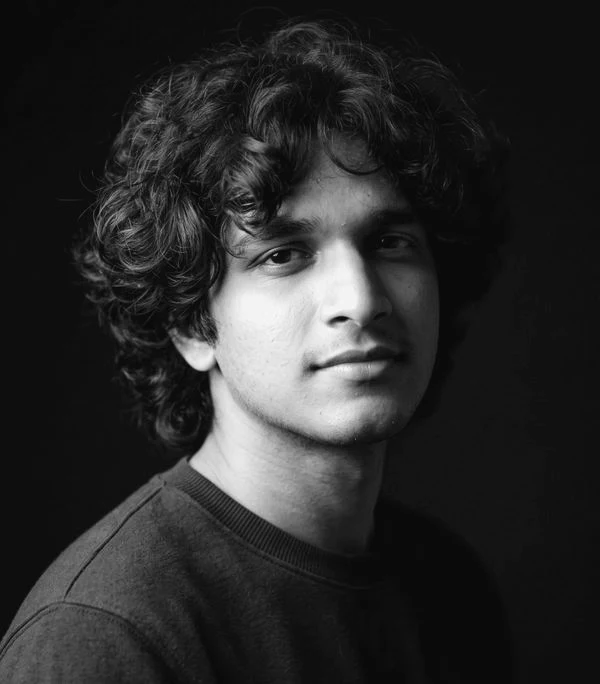
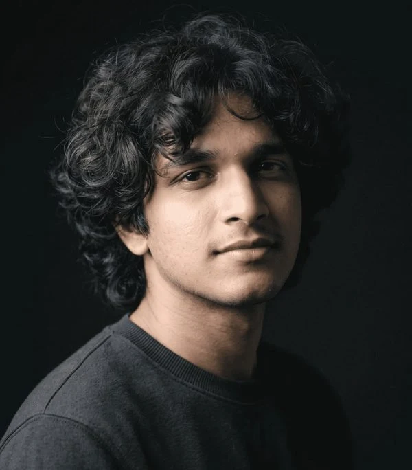
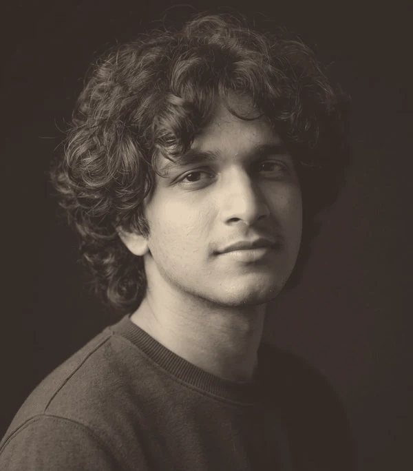

Soft black and white on a white mat, with a small caption underneath, like a gallery print.

The photo in muted colour inside an arch, with a single rust hairline traced around it.

A warm sepia oval inside two fine rings, like a portrait miniature.
A rust outline sits just behind the photo and slides closer when you hover.
The photo fades into a dark card, so its black background becomes part of the design.
Your name in large italic serif, half on the photo and half off. Confident without being loud.
A black-and-white circle that turns to colour on hover, with a thin accent arc that sweeps around.
Your current squircle without the shapes or overlay: muted colour, a soft shadow and a calm caption.